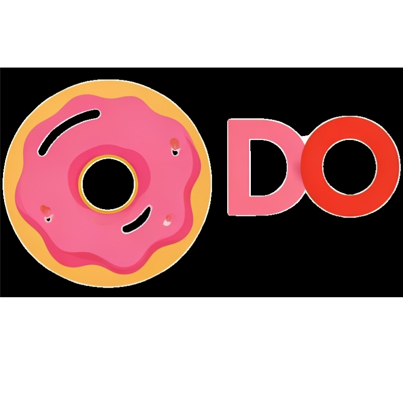

<nav class="fixed top-0 z-50 w-full bg-white border-b border-gray-200 shadow-md">
  <div class="px-3 py-3 lg:pl-3">


    <div class="flex items-center justify-between">

      <!--***************************************************************************************-->
      <!-- Left Section: Logo and Hamburger Menu -->
      <!--***************************************************************************************-->
      <div class="flex items-center justify-start rtl:justify-end">
        <button (click)="toggleSidebar()"
        aria-controls="logo-sidebar"
        type="button"
        class="inline-flex items-center text-sm text-gray-500 rounded-lg md:hidden hover:bg-gray-100 focus:outline-none focus:ring-2 focus:ring-gray-200">
        <svg class="w-6 h-6" aria-hidden="true" fill="currentColor" viewBox="0 0 20 20"
          xmlns="http://www.w3.org/2000/svg">
          <path clip-rule="evenodd" fill-rule="evenodd"
            d="M2 4.75A.75.75 0 012.75 4h14.5a.75.75 0 010 1.5H2.75A.75.75 0 012 4.75zm0 10.5a.75.75 0 01.75-.75h7.5a.75.75 0 010 1.5h-7.5a.75.75 0 01-.75-.75zM2 10a.75.75 0 01.75-.75h14.5a.75.75 0 010 1.5H2.75A.75.75 0 012 10z">
          </path>
        </svg>
      </button>
        <a href="#" class="">
          
          <!-- <span class="self-center font-bold text-2xl md:whitespace-nowrap">Dona-DO</span> -->
        </a>
      </div>
      <!--***************************************************************************************-->
      <!-- *Finish Left Section: Logo and Hamburguer Menu* -->
      <!--***************************************************************************************-->

      <!-- Right Section: User Profile -->
      <div class="flex items-center">
        <div class="relative">
          <button (click)="toggleDropDown()"
            class="flex items-center text-sm bg-gray-800 rounded-full focus:ring-4 focus:ring-gray-300">
            <span class="sr-only">Open user menu</span>
            
          </button>

          <!-- Dropdown Menu -->
          <div
            [ngClass]="!isHidden ? 'transition ease-out duration-100 opacity-0 scale-95' : 'transition ease-in duration-75 opacity-100 scale-100'"
            class="absolute right-0 top-14 w-48 bg-white rounded-lg shadow-md z-10">
            <div class="px-4 py-3">
              <p class="text-sm font-semibold text-gray-700">{{ userData?.str_user_username }}</p>
              <p class="text-sm text-gray-500 truncate">{{ userData?.str_user_email }}</p>
            </div>
            <ul class="py-1">
              <li>
                <div
                class="flex items-center justify-between px-4 py-2 text-sm text-gray-700 hover:bg-gray-100 rounded-lg">
                <a href="#" class="flex items-center gap-2">
                  <svg xmlns="http://www.w3.org/2000/svg" fill="none" viewBox="0 0 24 24" stroke-width="1.5" stroke="currentColor" class="size-6">
                    <path stroke-linecap="round" stroke-linejoin="round" d="m2.25 12 8.954-8.955c.44-.439 1.152-.439 1.591 0L21.75 12M4.5 9.75v10.125c0 .621.504 1.125 1.125 1.125H9.75v-4.875c0-.621.504-1.125 1.125-1.125h2.25c.621 0 1.125.504 1.125 1.125V21h4.125c.621 0 1.125-.504 1.125-1.125V9.75M8.25 21h8.25" />
                  </svg>
                  Inicio
                </a>
              </div>
              </li>
              <li>
                <div
                  class="flex items-center justify-between px-4 py-2 text-sm text-gray-700 hover:bg-gray-100 rounded-lg">
                  <a [routerLink]="'/dashboard/profile'" class="flex items-center gap-2">
                    <svg xmlns="http://www.w3.org/2000/svg" fill="none" viewBox="0 0 24 24" stroke-width="1.5"
                      stroke="currentColor" class="size-6">
                      <path stroke-linecap="round" stroke-linejoin="round"
                        d="M15.75 6a3.75 3.75 0 1 1-7.5 0 3.75 3.75 0 0 1 7.5 0ZM4.501 20.118a7.5 7.5 0 0 1 14.998 0A17.933 17.933 0 0 1 12 21.75c-2.676 0-5.216-.584-7.499-1.632Z" />
                    </svg>
                    Mi Perfil
                  </a>
                </div>
              </li>
              <li>
                <div
                  class="cursor-pointer flex items-center justify-between px-4 py-2 text-sm text-gray-700 hover:bg-gray-100 rounded-lg">
                  <a href="#" (click)="logout()" class="flex items-center gap-2">
                    <svg xmlns="http://www.w3.org/2000/svg" fill="none" viewBox="0 0 24 24" stroke-width="1.5"
                      stroke="currentColor" class="size-6">
                      <path stroke-linecap="round" stroke-linejoin="round"
                        d="M15.75 9V5.25A2.25 2.25 0 0 0 13.5 3h-6a2.25 2.25 0 0 0-2.25 2.25v13.5A2.25 2.25 0 0 0 7.5 21h6a2.25 2.25 0 0 0 2.25-2.25V15M12 9l-3 3m0 0 3 3m-3-3h12.75" />
                    </svg>
                    Cerrar Sesión
                  </a>
                </div>
              </li>
            </ul>
          </div>
        </div>
      </div>
    </div>
  </div>
</nav>
